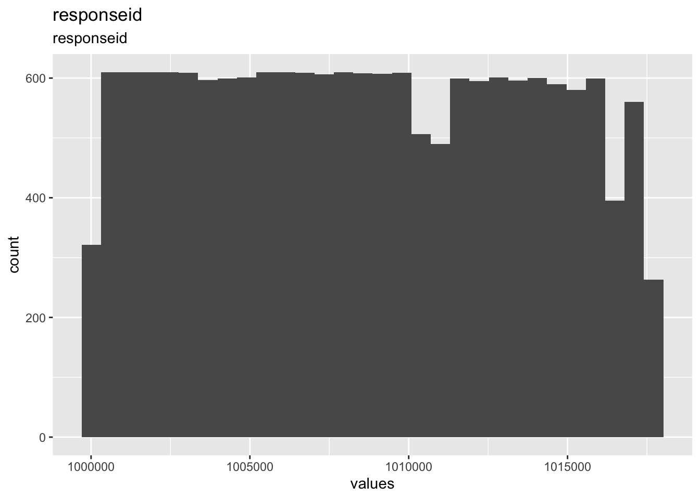
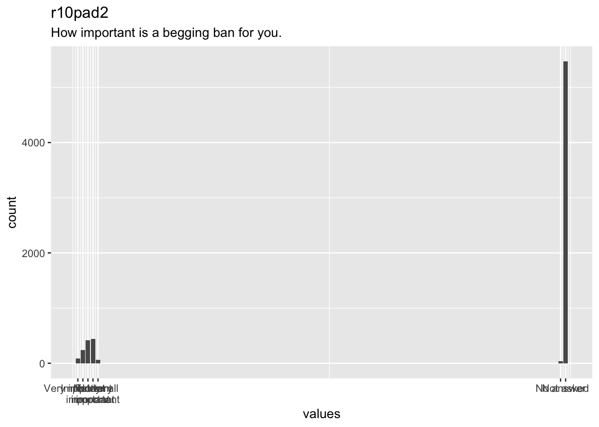
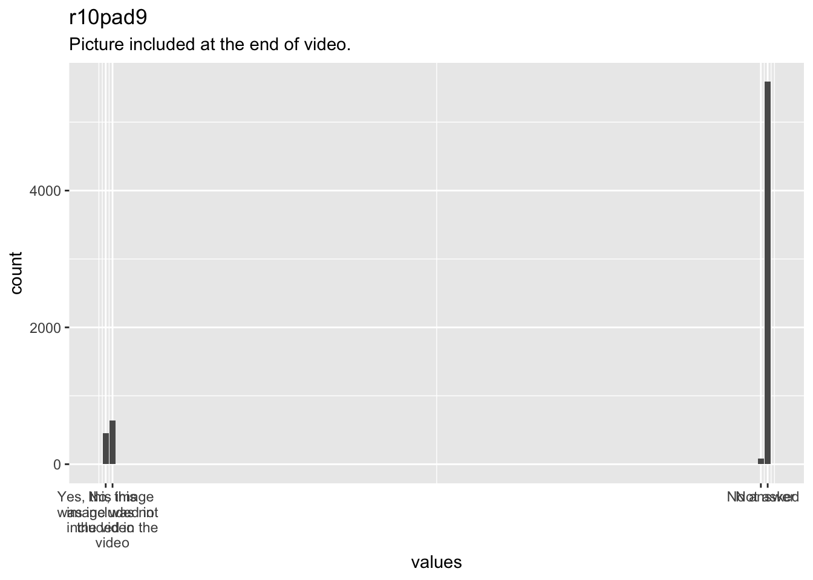

Chapter 10 Codebook
This chapter displays the codebook for the data set of the first Good Loser experiment, generated using the R package “codebook”.
## # A tibble: 17,011 x 30
## responseid r9pad1 r9pad2 r9pad3 r10panelpad r10pad1 r10pad2
## <dbl> <dbl+lb> <dbl+lb> <dbl+lb> <dbl+lbl> <dbl+lb> <dbl+lb>
## 1 NA NA NA NA NA NA NA
## 2 1000001 NA NA NA 0 [Histor~ 98 [Not~ 98 [Not~
## 3 1000002 NA NA NA 0 [Histor~ 98 [Not~ 98 [Not~
## 4 1000003 NA NA NA NA NA NA
## 5 1000004 NA NA NA NA NA NA
## 6 1000005 NA NA NA NA NA NA
## 7 1000006 NA NA NA NA NA NA
## 8 1000007 98 [Not~ 98 [Not~ 98 [Not~ NA NA NA
## 9 1000008 NA NA NA NA NA NA
## 10 1000009 NA NA NA NA NA NA
## # ... with 17,001 more rows, and 23 more variables:
## # r10pad3_mobil <dbl+lbl>, r10pad3a_ran <dbl+lbl>,
## # r10pad3b_ran <dbl+lbl>, r10pad3ended <dbl>, r10pad3error <dbl>,
## # r10pad3paused <dbl>, r10pad3played <dbl>, r10pad3_timespent <dbl>,
## # r10pad4 <dbl+lbl>, r10pad4_comment <chr>, r10pad5 <dbl+lbl>,
## # r10pad6 <dbl+lbl>, r10pad7 <dbl+lbl>, r10pad8 <dbl+lbl>,
## # r10pad9 <dbl+lbl>, r10pad1_9_backward_1 <dbl+lbl>,
## # r10pad1_9_backward_2 <dbl+lbl>, r10pad1_9_backward_3 <dbl+lbl>,
## # r10pad1_9_backward_4 <dbl+lbl>, r10pad1_9_backward_5 <dbl+lbl>,
## # r10pad1_9_backward_6 <dbl+lbl>, r10pad1_9_backward_7 <dbl+lbl>,
## # r10pad1_9_backward_8 <dbl+lbl>10.0.1 Metadata
10.0.1.1 Description
Dataset name: d
The dataset has N=17011 rows and 30 columns. 0 rows have no missing values on any column.
Metadata for search engines
Date published: 2019-09-06
keywords: responseid, r9pad1, r9pad2, r9pad3, r10panelpad, r10pad1, r10pad2, r10pad3_mobil, r10pad3a_ran, r10pad3b_ran, r10pad3ended, r10pad3error, r10pad3paused, r10pad3played, r10pad3_timespent, r10pad4, r10pad4_comment, r10pad5, r10pad6, r10pad7, r10pad8, r10pad9, r10pad1_9_backward_1, r10pad1_9_backward_2, r10pad1_9_backward_3, r10pad1_9_backward_4, r10pad1_9_backward_5, r10pad1_9_backward_6, r10pad1_9_backward_7 and r10pad1_9_backward_8
10.1 Variables
10.1.1 responseid
responseid
10.1.1.1 Distribution

1 missing values.
10.1.1.2 Summary statistics
| name | label | data_type | missing | complete | n | mean | sd | p0 | p25 | p50 | p75 | p100 | hist | format.spss |
|---|---|---|---|---|---|---|---|---|---|---|---|---|---|---|
| responseid | responseid | numeric | 1 | 17010 | 17011 | 1e+06 | 5074.32 | 1e+06 | 1e+06 | 1e+06 | 1e+06 | 1e+06 | ▇▇▇▇▇▇▇▇ | F8.0 |
10.1.2 r9pad1
How important is it to accept decisions about important social issues adopted by politicians/authorities
10.1.2.1 Distribution
10114 missing values.
10.1.2.2 Summary statistics
| name | label | data_type | value_labels | missing | complete | n | mean | sd | p0 | p25 | p50 | p75 | p100 | hist | format.spss |
|---|---|---|---|---|---|---|---|---|---|---|---|---|---|---|---|
| r9pad1 | How important is it to accept decisions about important social issues adopted by politicians/authorities | numeric |
|
10114 | 6897 | 17011 | 69.1 | 43.95 | 1 | 3 | 98 | 98 | 98 | ▃▁▁▁▁▁▁▇ | F1.0 |
10.1.2.3 Value labels
- Very important: 1
- Important: 2
- Somewhat important: 3
- Slightly important: 4
- Not important at all: 5
- No answer: 97
- Not asked: 98
10.1.3 r9pad2
To what extent do people in Norway accept decisions about important social issues adopted by politicians/authorities
10.1.3.1 Distribution
10114 missing values.
10.1.3.2 Summary statistics
| name | label | data_type | value_labels | missing | complete | n | mean | sd | p0 | p25 | p50 | p75 | p100 | hist | format.spss |
|---|---|---|---|---|---|---|---|---|---|---|---|---|---|---|---|
| r9pad2 | To what extent do people in Norway accept decisions about important social issues adopted by politicians/authorities | numeric |
|
10114 | 6897 | 17011 | 69.92 | 43.52 | 1 | 3 | 98 | 98 | 98 | ▃▁▁▁▁▁▁▇ | F1.0 |
10.1.3.3 Value labels
- To a very great extent: 1
- To a great extent: 2
- Somewhat: 3
- To a small extent: 4
- Not at all: 5
- No answer: 97
- Not asked: 98
10.1.4 r9pad3
Do you accept decisions about important social issues adopted by politicians/authorities?
10.1.4.1 Distribution

10114 missing values.
10.1.4.2 Summary statistics
| name | label | data_type | value_labels | missing | complete | n | mean | sd | p0 | p25 | p50 | p75 | p100 | hist | format.spss |
|---|---|---|---|---|---|---|---|---|---|---|---|---|---|---|---|
| r9pad3 | Do you accept decisions about important social issues adopted by politicians/authorities? | numeric |
|
10114 | 6897 | 17011 | 69.69 | 43.66 | 1 | 3 | 98 | 98 | 98 | ▃▁▁▁▁▁▁▇ | F1.0 |
10.1.4.3 Value labels
- To a very great extent: 1
- To a great extent: 2
- Somewhat: 3
- To a small extent: 4
- Not at all: 5
- No answer: 97
- Not asked: 98
10.1.5 r10panelpad
[Defines sub-group: panelpad. These are respondents who have responded to R9PAD1-3 but where u!=4]
10.1.5.1 Distribution
10246 missing values.
10.1.5.2 Summary statistics
| name | label | data_type | value_labels | missing | complete | n | mean | sd | p0 | p25 | p50 | p75 | p100 | hist | format.spss |
|---|---|---|---|---|---|---|---|---|---|---|---|---|---|---|---|
| r10panelpad |
[Defines sub-group: panelpad. These are respondents who have responded to R9PAD1-3 but where u!=4] |
numeric |
|
10246 | 6765 | 17011 | 0.19 | 0.39 | 0 | 0 | 0 | 0 | 1 | ▇▁▁▁▁▁▁▂ | F1.0 |
10.1.5.3 Value labels
- Historical conditions not fulfilled: 0
- Historical conditions fulfilled: 1
10.1.6 r10pad1
Opinion on begging ban in your municipality.
10.1.6.1 Distribution
10246 missing values.
10.1.6.2 Summary statistics
| name | label | data_type | value_labels | missing | complete | n | mean | sd | p0 | p25 | p50 | p75 | p100 | hist | format.spss |
|---|---|---|---|---|---|---|---|---|---|---|---|---|---|---|---|
| r10pad1 | Opinion on begging ban in your municipality. | numeric |
|
10246 | 6765 | 17011 | 80.03 | 37.6 | 1 | 98 | 98 | 98 | 98 | ▂▁▁▁▁▁▁▇ | F1.0 |
10.1.6.3 Value labels
- I generally support imposing a ban on begging in my municipality: 1
- I am generally against imposing a ban on begging in my municipality: 2
- No answer: 97
- Not asked: 98
10.1.7 r10pad2
How important is a begging ban for you.
10.1.7.1 Distribution

10246 missing values.
10.1.7.2 Summary statistics
| name | label | data_type | value_labels | missing | complete | n | mean | sd | p0 | p25 | p50 | p75 | p100 | hist | format.spss |
|---|---|---|---|---|---|---|---|---|---|---|---|---|---|---|---|
| r10pad2 | How important is a begging ban for you. | numeric |
|
10246 | 6765 | 17011 | 80.45 | 36.83 | 1 | 98 | 98 | 98 | 98 | ▂▁▁▁▁▁▁▇ | F1.0 |
10.1.7.3 Value labels
- Very important: 1
- Important: 2
- Fairly important: 3
- Not very important: 4
- Not at all important: 5
- No answer: 97
- Not asked: 98
10.1.8 r10pad3_mobil
[Asked if panelPAD=1. Background variable for r10pad3 (video). Detects whether or not the respondent is using a mobile device]
10.1.8.1 Distribution

15732 missing values.
10.1.8.2 Summary statistics
| name | label | data_type | value_labels | missing | complete | n | mean | sd | p0 | p25 | p50 | p75 | p100 | hist | format.spss |
|---|---|---|---|---|---|---|---|---|---|---|---|---|---|---|---|
| r10pad3_mobil |
[Asked if panelPAD=1. Background variable for r10pad3 (video). Detects whether or not the respondent is using a mobile device] |
numeric |
|
15732 | 1279 | 17011 | 0.27 | 0.44 | 0 | 0 | 0 | 1 | 1 | ▇▁▁▁▁▁▁▃ | F1.0 |
10.1.8.3 Value labels
- other: 0
- mobile: 1
10.1.9 r10pad3a_ran
[Randomizes if panelPAD=1. Background variable for r10pad3 (video). Respondents who chose option 2 in r10pad1 gets one of the 5 r10pad3B variants, randomly selected. Respondents who got r10pad1 but skipped the question gets randomly assigned one of the 10
10.1.9.1 Distribution

16158 missing values.
10.1.9.2 Summary statistics
| name | label | data_type | value_labels | missing | complete | n | mean | sd | p0 | p25 | p50 | p75 | p100 | hist | format.spss |
|---|---|---|---|---|---|---|---|---|---|---|---|---|---|---|---|
| r10pad3a_ran | [Randomizes if panelPAD=1. Background variable for r10pad3 (video). Respondents who chose option 2 in r10pad1 gets one of the 5 r10pad3B variants, randomly selected. Respondents who got r10pad1 but skipped the question gets randomly assigned one of the 10 | numeric |
|
16158 | 853 | 17011 | 2.97 | 1.37 | 1 | 2 | 3 | 4 | 5 | ▇▇▁▇▁▇▁▆ | F1.0 |
10.1.9.3 Value labels
- Respondenten får R10PAD3A1: 1
- Respondenten får R10PAD3A2: 2
- Respondenten får R10PAD3A3: 3
- Respondenten får R10PAD3A4: 4
- Respondenten får R10PAD3A5: 5
10.1.10 r10pad3b_ran
[Randomizes if panelPAD=1. Background variable for r10pad3 (video). Respondents who chose option 2 in r10pad1 gets one of the 5 r10pad3B variants, randomly selected. Respondents who got r10pad1 but skipped the question gets randomly assigned one of the 10
10.1.10.1 Distribution
16585 missing values.
10.1.10.2 Summary statistics
| name | label | data_type | value_labels | missing | complete | n | mean | sd | p0 | p25 | p50 | p75 | p100 | hist | format.spss |
|---|---|---|---|---|---|---|---|---|---|---|---|---|---|---|---|
| r10pad3b_ran | [Randomizes if panelPAD=1. Background variable for r10pad3 (video). Respondents who chose option 2 in r10pad1 gets one of the 5 r10pad3B variants, randomly selected. Respondents who got r10pad1 but skipped the question gets randomly assigned one of the 10 | numeric |
|
16585 | 426 | 17011 | 3.02 | 1.42 | 1 | 2 | 3 | 4 | 5 | ▇▇▁▇▁▆▁▇ | F1.0 |
10.1.10.3 Value labels
- Respondenten får R10PAD3B1: 1
- Respondenten får R10PAD3B2: 2
- Respondenten får R10PAD3B3: 3
- Respondenten får R10PAD3B4: 4
- Respondenten får R10PAD3B5: 5
10.1.11 r10pad3ended
[Asked if panelPAD=1. Background variable for r10pad3 (video). Counter for the event “video ended”]
10.1.11.1 Distribution
16222 missing values.
10.1.11.2 Summary statistics
| name | label | data_type | missing | complete | n | mean | sd | p0 | p25 | p50 | p75 | p100 | hist | format.spss |
|---|---|---|---|---|---|---|---|---|---|---|---|---|---|---|
| r10pad3ended |
[Asked if panelPAD=1. Background variable for r10pad3 (video). Counter for the event “video ended”] |
numeric | 16222 | 789 | 17011 | 1.15 | 0.43 | 1 | 1 | 1 | 1 | 4 | ▇▁▁▁▁▁▁▁ | F20.0 |
10.1.12 r10pad3error
[Asked if panelPAD=1. Background variable for r10pad3 (video). Counter for the event “video error”]
10.1.12.1 Distribution

16992 missing values.
10.1.12.2 Summary statistics
| name | label | data_type | missing | complete | n | mean | sd | p0 | p25 | p50 | p75 | p100 | hist | format.spss |
|---|---|---|---|---|---|---|---|---|---|---|---|---|---|---|
| r10pad3error |
[Asked if panelPAD=1. Background variable for r10pad3 (video). Counter for the event “video error”] |
numeric | 16992 | 19 | 17011 | 1.11 | 0.32 | 1 | 1 | 1 | 1 | 2 | ▇▁▁▁▁▁▁▁ | F20.0 |
10.1.13 r10pad3paused
[Asked if panelPAD=1. Background variable for r10pad3 (video). Counter for the event “video paused”]
10.1.13.1 Distribution
16318 missing values.
10.1.13.2 Summary statistics
| name | label | data_type | missing | complete | n | mean | sd | p0 | p25 | p50 | p75 | p100 | hist | format.spss |
|---|---|---|---|---|---|---|---|---|---|---|---|---|---|---|
| r10pad3paused |
[Asked if panelPAD=1. Background variable for r10pad3 (video). Counter for the event “video paused”] |
numeric | 16318 | 693 | 17011 | 1.48 | 1.29 | 1 | 1 | 1 | 1 | 20 | ▇▁▁▁▁▁▁▁ | F20.0 |
10.1.14 r10pad3played
[Asked if panelPAD=1. Background variable for r10pad3 (video). Counter for the event “video played”]
10.1.14.1 Distribution
16178 missing values.
10.1.14.2 Summary statistics
| name | label | data_type | missing | complete | n | mean | sd | p0 | p25 | p50 | p75 | p100 | hist | format.spss |
|---|---|---|---|---|---|---|---|---|---|---|---|---|---|---|
| r10pad3played |
[Asked if panelPAD=1. Background variable for r10pad3 (video). Counter for the event “video played”] |
numeric | 16178 | 833 | 17011 | 1.58 | 1.49 | 1 | 1 | 1 | 2 | 20 | ▇▁▁▁▁▁▁▁ | F20.0 |
10.1.15 r10pad3_timespent
[Asked if panelPAD=1. Background variable for r10pad3 (video). Calculated time spent in the video node]
10.1.15.1 Distribution
15737 missing values.
10.1.15.2 Summary statistics
| name | label | data_type | missing | complete | n | mean | sd | p0 | p25 | p50 | p75 | p100 | hist | format.spss |
|---|---|---|---|---|---|---|---|---|---|---|---|---|---|---|
| r10pad3_timespent |
[Asked if panelPAD=1. Background variable for r10pad3 (video). Calculated time spent in the video node] |
numeric | 15737 | 1274 | 17011 | 2440.89 | 35767.62 | 2 | 94 | 109 | 124 | 783439 | ▇▁▁▁▁▁▁▁ | F20.0 |
10.1.16 r10pad4
What was the recording like?
10.1.16.1 Distribution

10246 missing values.
10.1.16.2 Summary statistics
| name | label | data_type | value_labels | missing | complete | n | mean | sd | p0 | p25 | p50 | p75 | p100 | hist | format.spss |
|---|---|---|---|---|---|---|---|---|---|---|---|---|---|---|---|
| r10pad4 | What was the recording like? | numeric |
|
10246 | 6765 | 17011 | 79.98 | 37.6 | 1 | 98 | 98 | 98 | 98 | ▂▁▁▁▁▁▁▇ | F1.0 |
10.1.16.3 Value labels
- I had both sound and images: 1
- I had sound, but no images: 2
- I had images, but no sound: 3
- I had neither sound nor images: 4
- Something else prevented me from playing the video: 5
- No answer: 97
- Not asked: 98
10.1.17 r10pad4_comment
Comments about the recording. [Data withheld for the sake of anonymity]
10.1.17.1 Distribution

0 missing values.
10.1.17.2 Summary statistics
| name | label | data_type | missing | complete | n | empty | n_unique | min | max | format.spss | display_width |
|---|---|---|---|---|---|---|---|---|---|---|---|
| r10pad4_comment | Comments about the recording. [Data withheld for the sake of anonymity] | character | 0 | 17011 | 17011 | 17011 | 1 | 0 | 0 | A1 | 1 |
10.1.18 r10pad5
How fair was the way the decision was made.
10.1.18.1 Distribution
10246 missing values.
10.1.18.2 Summary statistics
| name | label | data_type | value_labels | missing | complete | n | mean | sd | p0 | p25 | p50 | p75 | p100 | hist | format.spss |
|---|---|---|---|---|---|---|---|---|---|---|---|---|---|---|---|
| r10pad5 | How fair was the way the decision was made. | numeric |
|
10246 | 6765 | 17011 | 81.8 | 35.93 | 1 | 98 | 98 | 98 | 98 | ▂▁▁▁▁▁▁▇ | F1.0 |
10.1.18.3 Value labels
- Very fair: 1
- Fair: 2
- Quite fair: 3
- Not very fair: 4
- Not at all fair: 5
- No answer: 97
- Not asked: 98
10.1.19 r10pad6
How willing are you to accept the outcome of the decision.
10.1.19.1 Distribution

10246 missing values.
10.1.19.2 Summary statistics
| name | label | data_type | value_labels | missing | complete | n | mean | sd | p0 | p25 | p50 | p75 | p100 | hist | format.spss |
|---|---|---|---|---|---|---|---|---|---|---|---|---|---|---|---|
| r10pad6 | How willing are you to accept the outcome of the decision. | numeric |
|
10246 | 6765 | 17011 | 83.46 | 34.34 | 1 | 98 | 98 | 98 | 98 | ▂▁▁▁▁▁▁▇ | F1.0 |
10.1.19.3 Value labels
- Very willing: 1
- Willing: 2
- Fairly willing: 3
- Not very willing: 4
- Not at all willing: 5
- No answer: 97
- Not asked: 98
10.1.20 r10pad7
Confidence in the politicians making the decision.
10.1.20.1 Distribution

10246 missing values.
10.1.20.2 Summary statistics
| name | label | data_type | value_labels | missing | complete | n | mean | sd | p0 | p25 | p50 | p75 | p100 | hist | format.spss |
|---|---|---|---|---|---|---|---|---|---|---|---|---|---|---|---|
| r10pad7 | Confidence in the politicians making the decision. | numeric |
|
10246 | 6765 | 17011 | 82.44 | 35.22 | 1 | 98 | 98 | 98 | 98 | ▂▁▁▁▁▁▁▇ | F1.0 |
10.1.20.3 Value labels
- Very high confidence: 1
- High confidence: 2
- Some confidence: 3
- Low confidence: 4
- No confidence at all: 5
- No answer: 97
- Not asked: 98
10.1.21 r10pad8
Outcome in video in line with own view on municipal begging ban.
10.1.21.1 Distribution

10246 missing values.
10.1.21.2 Summary statistics
| name | label | data_type | value_labels | missing | complete | n | mean | sd | p0 | p25 | p50 | p75 | p100 | hist | format.spss |
|---|---|---|---|---|---|---|---|---|---|---|---|---|---|---|---|
| r10pad8 | Outcome in video in line with own view on municipal begging ban. | numeric |
|
10246 | 6765 | 17011 | 82.27 | 35.56 | 1 | 98 | 98 | 98 | 98 | ▂▁▁▁▁▁▁▇ | F1.0 |
10.1.21.3 Value labels
- Yes: 1
- No: 2
- Don’t remember: 3
- Don’t know: 4
- No answer: 97
- Not asked: 98
10.1.22 r10pad9
Picture included at the end of video.
10.1.22.1 Distribution

10246 missing values.
10.1.22.2 Summary statistics
| name | label | data_type | value_labels | missing | complete | n | mean | sd | p0 | p25 | p50 | p75 | p100 | hist | format.spss |
|---|---|---|---|---|---|---|---|---|---|---|---|---|---|---|---|
| r10pad9 | Picture included at the end of video. | numeric |
|
10246 | 6765 | 17011 | 82.47 | 35.43 | 1 | 98 | 98 | 98 | 98 | ▂▁▁▁▁▁▁▇ | F1.0 |
10.1.22.3 Value labels
- Yes, this image was included in the video: 1
- No, this image was not included in the video: 2
- No answer: 97
- Not asked: 98
10.1.23 r10pad1_9_backward_1
Return button used: R10PAD9 -> R10PAD8
10.1.23.1 Distribution
16875 missing values.
10.1.23.2 Summary statistics
| name | label | data_type | value_labels | missing | complete | n | mean | sd | p0 | p25 | p50 | p75 | p100 | hist | format.spss |
|---|---|---|---|---|---|---|---|---|---|---|---|---|---|---|---|
| r10pad1_9_backward_1 | Return button used: R10PAD9 -> R10PAD8 | numeric |
|
16875 | 136 | 17011 | 1 | 0 | 1 | 1 | 1 | 1 | 1 | ▁▁▁▇▁▁▁▁ | F1.0 |
10.1.23.3 Value labels
- Yes, return button used from R10PAD9 -> R10PAD8Â : 1
10.1.24 r10pad1_9_backward_2
Return button used: R10PAD8 -> R10PAD7
10.1.24.1 Distribution

16841 missing values.
10.1.24.2 Summary statistics
| name | label | data_type | value_labels | missing | complete | n | mean | sd | p0 | p25 | p50 | p75 | p100 | hist | format.spss |
|---|---|---|---|---|---|---|---|---|---|---|---|---|---|---|---|
| r10pad1_9_backward_2 | Return button used: R10PAD8 -> R10PAD7 | numeric |
|
16841 | 170 | 17011 | 1 | 0 | 1 | 1 | 1 | 1 | 1 | ▁▁▁▇▁▁▁▁ | F1.0 |
10.1.24.3 Value labels
- Yes, return button used from R10PAD8 -> R10PAD7: 1
10.1.25 r10pad1_9_backward_3
Return button used: R10PAD7 -> R10PAD6
10.1.25.1 Distribution

16815 missing values.
10.1.25.2 Summary statistics
| name | label | data_type | value_labels | missing | complete | n | mean | sd | p0 | p25 | p50 | p75 | p100 | hist | format.spss |
|---|---|---|---|---|---|---|---|---|---|---|---|---|---|---|---|
| r10pad1_9_backward_3 | Return button used: R10PAD7 -> R10PAD6 | numeric |
|
16815 | 196 | 17011 | 1 | 0 | 1 | 1 | 1 | 1 | 1 | ▁▁▁▇▁▁▁▁ | F1.0 |
10.1.25.3 Value labels
- Yes, return button used from R10PAD7 -> R10PAD6Â : 1
10.1.26 r10pad1_9_backward_4
Return button used: R10PAD6 -> R10PAD5
10.1.26.1 Distribution
16882 missing values.
10.1.26.2 Summary statistics
| name | label | data_type | value_labels | missing | complete | n | mean | sd | p0 | p25 | p50 | p75 | p100 | hist | format.spss |
|---|---|---|---|---|---|---|---|---|---|---|---|---|---|---|---|
| r10pad1_9_backward_4 | Return button used: R10PAD6 -> R10PAD5 | numeric |
|
16882 | 129 | 17011 | 1 | 0 | 1 | 1 | 1 | 1 | 1 | ▁▁▁▇▁▁▁▁ | F1.0 |
10.1.26.3 Value labels
- Yes, return button used from R10PAD6 -> R10PAD5: 1
10.1.27 r10pad1_9_backward_5
Return button used: R10PAD5 -> R10PAD4
10.1.27.1 Distribution

16867 missing values.
10.1.27.2 Summary statistics
| name | label | data_type | value_labels | missing | complete | n | mean | sd | p0 | p25 | p50 | p75 | p100 | hist | format.spss |
|---|---|---|---|---|---|---|---|---|---|---|---|---|---|---|---|
| r10pad1_9_backward_5 | Return button used: R10PAD5 -> R10PAD4 | numeric |
|
16867 | 144 | 17011 | 1 | 0 | 1 | 1 | 1 | 1 | 1 | ▁▁▁▇▁▁▁▁ | F1.0 |
10.1.27.3 Value labels
- Yes, return button used from R10PAD5 -> R10PAD4: 1
10.1.28 r10pad1_9_backward_6
Return button used: R10PAD4 -> R10PAD3
10.1.28.1 Distribution

16847 missing values.
10.1.28.2 Summary statistics
| name | label | data_type | value_labels | missing | complete | n | mean | sd | p0 | p25 | p50 | p75 | p100 | hist | format.spss |
|---|---|---|---|---|---|---|---|---|---|---|---|---|---|---|---|
| r10pad1_9_backward_6 | Return button used: R10PAD4 -> R10PAD3 | numeric |
|
16847 | 164 | 17011 | 1 | 0 | 1 | 1 | 1 | 1 | 1 | ▁▁▁▇▁▁▁▁ | F1.0 |
10.1.28.3 Value labels
- Yes, return button used from R10PAD4 -> R10PAD3: 1
10.1.29 r10pad1_9_backward_7
Return button used: R10PAD3 -> R10PAD2
10.1.29.1 Distribution
16916 missing values.
10.1.29.2 Summary statistics
| name | label | data_type | value_labels | missing | complete | n | mean | sd | p0 | p25 | p50 | p75 | p100 | hist | format.spss |
|---|---|---|---|---|---|---|---|---|---|---|---|---|---|---|---|
| r10pad1_9_backward_7 | Return button used: R10PAD3 -> R10PAD2 | numeric |
|
16916 | 95 | 17011 | 1 | 0 | 1 | 1 | 1 | 1 | 1 | ▁▁▁▇▁▁▁▁ | F1.0 |
10.1.29.3 Value labels
- Yes, return button used from R10PAD3 -> R10PAD2Â : 1
10.1.30 r10pad1_9_backward_8
Return button used: R10PAD2 -> R10PAD1
10.1.30.1 Distribution
16932 missing values.
10.1.30.2 Summary statistics
| name | label | data_type | value_labels | missing | complete | n | mean | sd | p0 | p25 | p50 | p75 | p100 | hist | format.spss |
|---|---|---|---|---|---|---|---|---|---|---|---|---|---|---|---|
| r10pad1_9_backward_8 | Return button used: R10PAD2 -> R10PAD1 | numeric |
|
16932 | 79 | 17011 | 1 | 0 | 1 | 1 | 1 | 1 | 1 | ▁▁▁▇▁▁▁▁ | F1.0 |
10.1.30.3 Value labels
- Yes, return button used from R10PAD2 -> R10PAD1: 1
10.2 Missingness report
10.3 Codebook table
JSON-LD metadata
The following JSON-LD can be found by search engines, if you share this codebook publicly on the web.
{
"name": "d",
"datePublished": "2019-09-06",
"description": "The dataset has N=17011 rows and 30 columns.\n0 rows have no missing values on any column.\n\n\n## Table of variables\nThis table contains variable names, labels, their central tendencies and other attributes.\n\n|name |label |data_type |value_labels |missing |complete |n |empty |n_unique |min |max |mean |sd |p0 |p25 |p50 |p75 |p100 |hist |format.spss |display_width |\n|:--------------------|:---------------------------------------------------------------------------------------------------------------------------------------------------------------------------------------------------------------------------------------------------------------|:---------|:--------------------------------------------------------------------------------------------------------------------------------------------------------------------------------------------------------------------|:-------|:--------|:-----|:-----|:--------|:---|:---|:-------|:--------|:-----|:-----|:-----|:-----|:------|:--------|:-----------|:-------------|\n|responseid |responseid |numeric |NA |1 |17010 |17011 |NA |NA |NA |NA |1e+06 |5074.32 |1e+06 |1e+06 |1e+06 |1e+06 |1e+06 |▇▇▇▇▇▇▇▇ |F8.0 |NA |\n|r9pad1 |How important is it to accept decisions about important social issues adopted by politicians/authorities |numeric |1. Very important, - 2. Important, - 3. Somewhat important, - 4. Slightly important, - 5. Not important at all, - 97. No answer, - 98. Not asked |10114 |6897 |17011 |NA |NA |NA |NA |69.1 |43.95 |1 |3 |98 |98 |98 |▃▁▁▁▁▁▁▇ |F1.0 |NA |\n|r9pad2 |To what extent do people in Norway accept decisions about important social issues adopted by politicians/authorities |numeric |1. To a very great extent, - 2. To a great extent, - 3. Somewhat, - 4. To a small extent, - 5. Not at all, - 97. No answer, - 98. Not asked |10114 |6897 |17011 |NA |NA |NA |NA |69.92 |43.52 |1 |3 |98 |98 |98 |▃▁▁▁▁▁▁▇ |F1.0 |NA |\n|r9pad3 |Do you accept decisions about important social issues adopted by politicians/authorities? |numeric |1. To a very great extent, - 2. To a great extent, - 3. Somewhat, - 4. To a small extent, - 5. Not at all, - 97. No answer, - 98. Not asked |10114 |6897 |17011 |NA |NA |NA |NA |69.69 |43.66 |1 |3 |98 |98 |98 |▃▁▁▁▁▁▁▇ |F1.0 |NA |\n|r10panelpad |[Defines sub-group: panelpad. These are respondents who have responded to R9PAD1-3 but where u!=4] |numeric |0. Historical conditions not fulfilled, - 1. Historical conditions fulfilled |10246 |6765 |17011 |NA |NA |NA |NA |0.19 |0.39 |0 |0 |0 |0 |1 |▇▁▁▁▁▁▁▂ |F1.0 |NA |\n|r10pad1 |Opinion on begging ban in your municipality. |numeric |1. I generally support imposing a ban on begging in my municipality, - 2. I am generally against imposing a ban on begging in my municipality, - 97. No answer, - 98. Not asked |10246 |6765 |17011 |NA |NA |NA |NA |80.03 |37.6 |1 |98 |98 |98 |98 |▂▁▁▁▁▁▁▇ |F1.0 |NA |\n|r10pad2 |How important is a begging ban for you. |numeric |1. Very important, - 2. Important, - 3. Fairly important, - 4. Not very important, - 5. Not at all important, - 97. No answer, - 98. Not asked |10246 |6765 |17011 |NA |NA |NA |NA |80.45 |36.83 |1 |98 |98 |98 |98 |▂▁▁▁▁▁▁▇ |F1.0 |NA |\n|r10pad3_mobil |[Asked if panelPAD=1. Background variable for r10pad3 (video). Detects whether or not the respondent is using a mobile device] |numeric |0. other, - 1. mobile |15732 |1279 |17011 |NA |NA |NA |NA |0.27 |0.44 |0 |0 |0 |1 |1 |▇▁▁▁▁▁▁▃ |F1.0 |NA |\n|r10pad3a_ran |[Randomizes if panelPAD=1. Background variable for r10pad3 (video). Respondents who chose option 2 in r10pad1 gets one of the 5 r10pad3B variants, randomly selected. Respondents who got r10pad1 but skipped the question gets randomly assigned one of the 10 |numeric |1. Respondenten får R10PAD3A1, - 2. Respondenten får R10PAD3A2, - 3. Respondenten får R10PAD3A3, - 4. Respondenten får R10PAD3A4, - 5. Respondenten får R10PAD3A5 |16158 |853 |17011 |NA |NA |NA |NA |2.97 |1.37 |1 |2 |3 |4 |5 |▇▇▁▇▁▇▁▆ |F1.0 |NA |\n|r10pad3b_ran |[Randomizes if panelPAD=1. Background variable for r10pad3 (video). Respondents who chose option 2 in r10pad1 gets one of the 5 r10pad3B variants, randomly selected. Respondents who got r10pad1 but skipped the question gets randomly assigned one of the 10 |numeric |1. Respondenten får R10PAD3B1, - 2. Respondenten får R10PAD3B2, - 3. Respondenten får R10PAD3B3, - 4. Respondenten får R10PAD3B4, - 5. Respondenten får R10PAD3B5 |16585 |426 |17011 |NA |NA |NA |NA |3.02 |1.42 |1 |2 |3 |4 |5 |▇▇▁▇▁▆▁▇ |F1.0 |NA |\n|r10pad3ended |[Asked if panelPAD=1. Background variable for r10pad3 (video). Counter for the event \"video ended\"] |numeric |NA |16222 |789 |17011 |NA |NA |NA |NA |1.15 |0.43 |1 |1 |1 |1 |4 |▇▁▁▁▁▁▁▁ |F20.0 |NA |\n|r10pad3error |[Asked if panelPAD=1. Background variable for r10pad3 (video). Counter for the event \"video error\"] |numeric |NA |16992 |19 |17011 |NA |NA |NA |NA |1.11 |0.32 |1 |1 |1 |1 |2 |▇▁▁▁▁▁▁▁ |F20.0 |NA |\n|r10pad3paused |[Asked if panelPAD=1. Background variable for r10pad3 (video). Counter for the event \"video paused\"] |numeric |NA |16318 |693 |17011 |NA |NA |NA |NA |1.48 |1.29 |1 |1 |1 |1 |20 |▇▁▁▁▁▁▁▁ |F20.0 |NA |\n|r10pad3played |[Asked if panelPAD=1. Background variable for r10pad3 (video). Counter for the event \"video played\"] |numeric |NA |16178 |833 |17011 |NA |NA |NA |NA |1.58 |1.49 |1 |1 |1 |2 |20 |▇▁▁▁▁▁▁▁ |F20.0 |NA |\n|r10pad3_timespent |[Asked if panelPAD=1. Background variable for r10pad3 (video). Calculated time spent in the video node] |numeric |NA |15737 |1274 |17011 |NA |NA |NA |NA |2440.89 |35767.62 |2 |94 |109 |124 |783439 |▇▁▁▁▁▁▁▁ |F20.0 |NA |\n|r10pad4 |What was the recording like? |numeric |1. I had both sound and images, - 2. I had sound, but no images, - 3. I had images, but no sound, - 4. I had neither sound nor images, - 5. Something else prevented me from playing the video, - 97. No answer, - 98. Not asked |10246 |6765 |17011 |NA |NA |NA |NA |79.98 |37.6 |1 |98 |98 |98 |98 |▂▁▁▁▁▁▁▇ |F1.0 |NA |\n|r10pad4_comment |Comments about the recording. [Data withheld for the sake of anonymity] |character |NA |0 |17011 |17011 |17011 |1 |0 |0 |NA |NA |NA |NA |NA |NA |NA |NA |A1 |1 |\n|r10pad5 |How fair was the way the decision was made. |numeric |1. Very fair, - 2. Fair, - 3. Quite fair, - 4. Not very fair, - 5. Not at all fair, - 97. No answer, - 98. Not asked |10246 |6765 |17011 |NA |NA |NA |NA |81.8 |35.93 |1 |98 |98 |98 |98 |▂▁▁▁▁▁▁▇ |F1.0 |NA |\n|r10pad6 |How willing are you to accept the outcome of the decision. |numeric |1. Very willing, - 2. Willing, - 3. Fairly willing, - 4. Not very willing, - 5. Not at all willing, - 97. No answer, - 98. Not asked |10246 |6765 |17011 |NA |NA |NA |NA |83.46 |34.34 |1 |98 |98 |98 |98 |▂▁▁▁▁▁▁▇ |F1.0 |NA |\n|r10pad7 |Confidence in the politicians making the decision. |numeric |1. Very high confidence, - 2. High confidence, - 3. Some confidence, - 4. Low confidence, - 5. No confidence at all, - 97. No answer, - 98. Not asked |10246 |6765 |17011 |NA |NA |NA |NA |82.44 |35.22 |1 |98 |98 |98 |98 |▂▁▁▁▁▁▁▇ |F1.0 |NA |\n|r10pad8 |Outcome in video in line with own view on municipal begging ban. |numeric |1. Yes, - 2. No, - 3. Don't remember, - 4. Don't know, - 97. No answer, - 98. Not asked |10246 |6765 |17011 |NA |NA |NA |NA |82.27 |35.56 |1 |98 |98 |98 |98 |▂▁▁▁▁▁▁▇ |F1.0 |NA |\n|r10pad9 |Picture included at the end of video. |numeric |1. Yes, this image was included in the video, - 2. No, this image was not included in the video, - 97. No answer, - 98. Not asked |10246 |6765 |17011 |NA |NA |NA |NA |82.47 |35.43 |1 |98 |98 |98 |98 |▂▁▁▁▁▁▁▇ |F1.0 |NA |\n|r10pad1_9_backward_1 |Return button used: R10PAD9 -> R10PAD8 |numeric |1. Yes, return button used from R10PAD9 -> R10PAD8 |16875 |136 |17011 |NA |NA |NA |NA |1 |0 |1 |1 |1 |1 |1 |▁▁▁▇▁▁▁▁ |F1.0 |NA |\n|r10pad1_9_backward_2 |Return button used: R10PAD8 -> R10PAD7 |numeric |1. Yes, return button used from R10PAD8 -> R10PAD7 |16841 |170 |17011 |NA |NA |NA |NA |1 |0 |1 |1 |1 |1 |1 |▁▁▁▇▁▁▁▁ |F1.0 |NA |\n|r10pad1_9_backward_3 |Return button used: R10PAD7 -> R10PAD6 |numeric |1. Yes, return button used from R10PAD7 -> R10PAD6 |16815 |196 |17011 |NA |NA |NA |NA |1 |0 |1 |1 |1 |1 |1 |▁▁▁▇▁▁▁▁ |F1.0 |NA |\n|r10pad1_9_backward_4 |Return button used: R10PAD6 -> R10PAD5 |numeric |1. Yes, return button used from R10PAD6 -> R10PAD5 |16882 |129 |17011 |NA |NA |NA |NA |1 |0 |1 |1 |1 |1 |1 |▁▁▁▇▁▁▁▁ |F1.0 |NA |\n|r10pad1_9_backward_5 |Return button used: R10PAD5 -> R10PAD4 |numeric |1. Yes, return button used from R10PAD5 -> R10PAD4 |16867 |144 |17011 |NA |NA |NA |NA |1 |0 |1 |1 |1 |1 |1 |▁▁▁▇▁▁▁▁ |F1.0 |NA |\n|r10pad1_9_backward_6 |Return button used: R10PAD4 -> R10PAD3 |numeric |1. Yes, return button used from R10PAD4 -> R10PAD3 |16847 |164 |17011 |NA |NA |NA |NA |1 |0 |1 |1 |1 |1 |1 |▁▁▁▇▁▁▁▁ |F1.0 |NA |\n|r10pad1_9_backward_7 |Return button used: R10PAD3 -> R10PAD2 |numeric |1. Yes, return button used from R10PAD3 -> R10PAD2 |16916 |95 |17011 |NA |NA |NA |NA |1 |0 |1 |1 |1 |1 |1 |▁▁▁▇▁▁▁▁ |F1.0 |NA |\n|r10pad1_9_backward_8 |Return button used: R10PAD2 -> R10PAD1 |numeric |1. Yes, return button used from R10PAD2 -> R10PAD1 |16932 |79 |17011 |NA |NA |NA |NA |1 |0 |1 |1 |1 |1 |1 |▁▁▁▇▁▁▁▁ |F1.0 |NA |\n\n### Note\nThis dataset was automatically described using the [codebook R package](https://rubenarslan.github.io/codebook/) (version 0.8.1).",
"keywords": ["responseid", "r9pad1", "r9pad2", "r9pad3", "r10panelpad", "r10pad1", "r10pad2", "r10pad3_mobil", "r10pad3a_ran", "r10pad3b_ran", "r10pad3ended", "r10pad3error", "r10pad3paused", "r10pad3played", "r10pad3_timespent", "r10pad4", "r10pad4_comment", "r10pad5", "r10pad6", "r10pad7", "r10pad8", "r10pad9", "r10pad1_9_backward_1", "r10pad1_9_backward_2", "r10pad1_9_backward_3", "r10pad1_9_backward_4", "r10pad1_9_backward_5", "r10pad1_9_backward_6", "r10pad1_9_backward_7", "r10pad1_9_backward_8"],
"@context": "http://schema.org/",
"@type": "Dataset",
"variableMeasured": [
{
"name": "responseid",
"description": "responseid",
"@type": "propertyValue"
},
{
"name": "r9pad1",
"description": "How important is it to accept decisions about important social issues adopted by politicians/authorities",
"value": "1. Very important,\n2. Important,\n3. Somewhat important,\n4. Slightly important,\n5. Not important at all,\n97. No answer,\n98. Not asked",
"maxValue": 98,
"minValue": 1,
"@type": "propertyValue"
},
{
"name": "r9pad2",
"description": "To what extent do people in Norway accept decisions about important social issues adopted by politicians/authorities",
"value": "1. To a very great extent,\n2. To a great extent,\n3. Somewhat,\n4. To a small extent,\n5. Not at all,\n97. No answer,\n98. Not asked",
"maxValue": 98,
"minValue": 1,
"@type": "propertyValue"
},
{
"name": "r9pad3",
"description": "Do you accept decisions about important social issues adopted by politicians/authorities?",
"value": "1. To a very great extent,\n2. To a great extent,\n3. Somewhat,\n4. To a small extent,\n5. Not at all,\n97. No answer,\n98. Not asked",
"maxValue": 98,
"minValue": 1,
"@type": "propertyValue"
},
{
"name": "r10panelpad",
"description": "[Defines sub-group: panelpad. These are respondents who have responded to R9PAD1-3 but where u!=4]\r\n",
"value": "0. Historical conditions not fulfilled,\n1. Historical conditions fulfilled",
"maxValue": 1,
"minValue": 0,
"@type": "propertyValue"
},
{
"name": "r10pad1",
"description": "Opinion on begging ban in your municipality.",
"value": "1. I generally support imposing a ban on begging in my municipality,\n2. I am generally against imposing a ban on begging in my municipality,\n97. No answer,\n98. Not asked",
"maxValue": 98,
"minValue": 1,
"@type": "propertyValue"
},
{
"name": "r10pad2",
"description": "How important is a begging ban for you.",
"value": "1. Very important,\n2. Important,\n3. Fairly important,\n4. Not very important,\n5. Not at all important,\n97. No answer,\n98. Not asked",
"maxValue": 98,
"minValue": 1,
"@type": "propertyValue"
},
{
"name": "r10pad3_mobil",
"description": "[Asked if panelPAD=1. Background variable for r10pad3 (video). Detects whether or not the respondent is using a mobile device]\r\n",
"value": "0. other,\n1. mobile",
"maxValue": 1,
"minValue": 0,
"@type": "propertyValue"
},
{
"name": "r10pad3a_ran",
"description": "[Randomizes if panelPAD=1. Background variable for r10pad3 (video). Respondents who chose option 2 in r10pad1 gets one of the 5 r10pad3B variants, randomly selected. Respondents who got r10pad1 but skipped the question gets randomly assigned one of the 10",
"value": "1. Respondenten får R10PAD3A1,\n2. Respondenten får R10PAD3A2,\n3. Respondenten får R10PAD3A3,\n4. Respondenten får R10PAD3A4,\n5. Respondenten får R10PAD3A5",
"maxValue": 5,
"minValue": 1,
"@type": "propertyValue"
},
{
"name": "r10pad3b_ran",
"description": "[Randomizes if panelPAD=1. Background variable for r10pad3 (video). Respondents who chose option 2 in r10pad1 gets one of the 5 r10pad3B variants, randomly selected. Respondents who got r10pad1 but skipped the question gets randomly assigned one of the 10",
"value": "1. Respondenten får R10PAD3B1,\n2. Respondenten får R10PAD3B2,\n3. Respondenten får R10PAD3B3,\n4. Respondenten får R10PAD3B4,\n5. Respondenten får R10PAD3B5",
"maxValue": 5,
"minValue": 1,
"@type": "propertyValue"
},
{
"name": "r10pad3ended",
"description": "[Asked if panelPAD=1. Background variable for r10pad3 (video). Counter for the event \"video ended\"]\r\n",
"@type": "propertyValue"
},
{
"name": "r10pad3error",
"description": "[Asked if panelPAD=1. Background variable for r10pad3 (video). Counter for the event \"video error\"]\r\n",
"@type": "propertyValue"
},
{
"name": "r10pad3paused",
"description": "[Asked if panelPAD=1. Background variable for r10pad3 (video). Counter for the event \"video paused\"]\r\n",
"@type": "propertyValue"
},
{
"name": "r10pad3played",
"description": "[Asked if panelPAD=1. Background variable for r10pad3 (video). Counter for the event \"video played\"]\r\n",
"@type": "propertyValue"
},
{
"name": "r10pad3_timespent",
"description": "[Asked if panelPAD=1. Background variable for r10pad3 (video). Calculated time spent in the video node]\r\n",
"@type": "propertyValue"
},
{
"name": "r10pad4",
"description": "What was the recording like?",
"value": "1. I had both sound and images,\n2. I had sound, but no images,\n3. I had images, but no sound,\n4. I had neither sound nor images,\n5. Something else prevented me from playing the video,\n97. No answer,\n98. Not asked",
"maxValue": 98,
"minValue": 1,
"@type": "propertyValue"
},
{
"name": "r10pad4_comment",
"description": "Comments about the recording. [Data withheld for the sake of anonymity]",
"@type": "propertyValue"
},
{
"name": "r10pad5",
"description": "How fair was the way the decision was made.",
"value": "1. Very fair,\n2. Fair,\n3. Quite fair,\n4. Not very fair,\n5. Not at all fair,\n97. No answer,\n98. Not asked",
"maxValue": 98,
"minValue": 1,
"@type": "propertyValue"
},
{
"name": "r10pad6",
"description": "How willing are you to accept the outcome of the decision.",
"value": "1. Very willing,\n2. Willing,\n3. Fairly willing,\n4. Not very willing,\n5. Not at all willing,\n97. No answer,\n98. Not asked",
"maxValue": 98,
"minValue": 1,
"@type": "propertyValue"
},
{
"name": "r10pad7",
"description": "Confidence in the politicians making the decision.",
"value": "1. Very high confidence,\n2. High confidence,\n3. Some confidence,\n4. Low confidence,\n5. No confidence at all,\n97. No answer,\n98. Not asked",
"maxValue": 98,
"minValue": 1,
"@type": "propertyValue"
},
{
"name": "r10pad8",
"description": "Outcome in video in line with own view on municipal begging ban.",
"value": "1. Yes,\n2. No,\n3. Don't remember,\n4. Don't know,\n97. No answer,\n98. Not asked",
"maxValue": 98,
"minValue": 1,
"@type": "propertyValue"
},
{
"name": "r10pad9",
"description": "Picture included at the end of video.",
"value": "1. Yes, this image was included in the video,\n2. No, this image was not included in the video,\n97. No answer,\n98. Not asked",
"maxValue": 98,
"minValue": 1,
"@type": "propertyValue"
},
{
"name": "r10pad1_9_backward_1",
"description": "Return button used: R10PAD9 -> R10PAD8",
"value": "1. Yes, return button used from R10PAD9 -> R10PAD8 ",
"maxValue": 1,
"minValue": 1,
"@type": "propertyValue"
},
{
"name": "r10pad1_9_backward_2",
"description": "Return button used: R10PAD8 -> R10PAD7",
"value": "1. Yes, return button used from R10PAD8 -> R10PAD7",
"maxValue": 1,
"minValue": 1,
"@type": "propertyValue"
},
{
"name": "r10pad1_9_backward_3",
"description": "Return button used: R10PAD7 -> R10PAD6",
"value": "1. Yes, return button used from R10PAD7 -> R10PAD6 ",
"maxValue": 1,
"minValue": 1,
"@type": "propertyValue"
},
{
"name": "r10pad1_9_backward_4",
"description": "Return button used: R10PAD6 -> R10PAD5",
"value": "1. Yes, return button used from R10PAD6 -> R10PAD5",
"maxValue": 1,
"minValue": 1,
"@type": "propertyValue"
},
{
"name": "r10pad1_9_backward_5",
"description": "Return button used: R10PAD5 -> R10PAD4",
"value": "1. Yes, return button used from R10PAD5 -> R10PAD4",
"maxValue": 1,
"minValue": 1,
"@type": "propertyValue"
},
{
"name": "r10pad1_9_backward_6",
"description": "Return button used: R10PAD4 -> R10PAD3",
"value": "1. Yes, return button used from R10PAD4 -> R10PAD3",
"maxValue": 1,
"minValue": 1,
"@type": "propertyValue"
},
{
"name": "r10pad1_9_backward_7",
"description": "Return button used: R10PAD3 -> R10PAD2",
"value": "1. Yes, return button used from R10PAD3 -> R10PAD2 ",
"maxValue": 1,
"minValue": 1,
"@type": "propertyValue"
},
{
"name": "r10pad1_9_backward_8",
"description": "Return button used: R10PAD2 -> R10PAD1",
"value": "1. Yes, return button used from R10PAD2 -> R10PAD1",
"maxValue": 1,
"minValue": 1,
"@type": "propertyValue"
}
]
}`